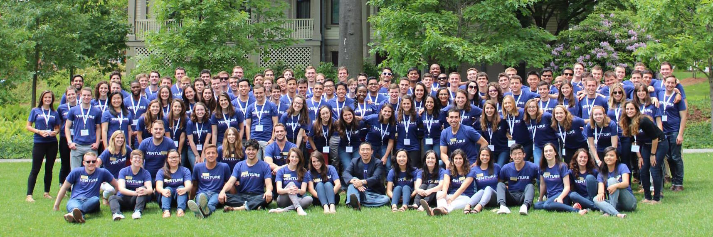
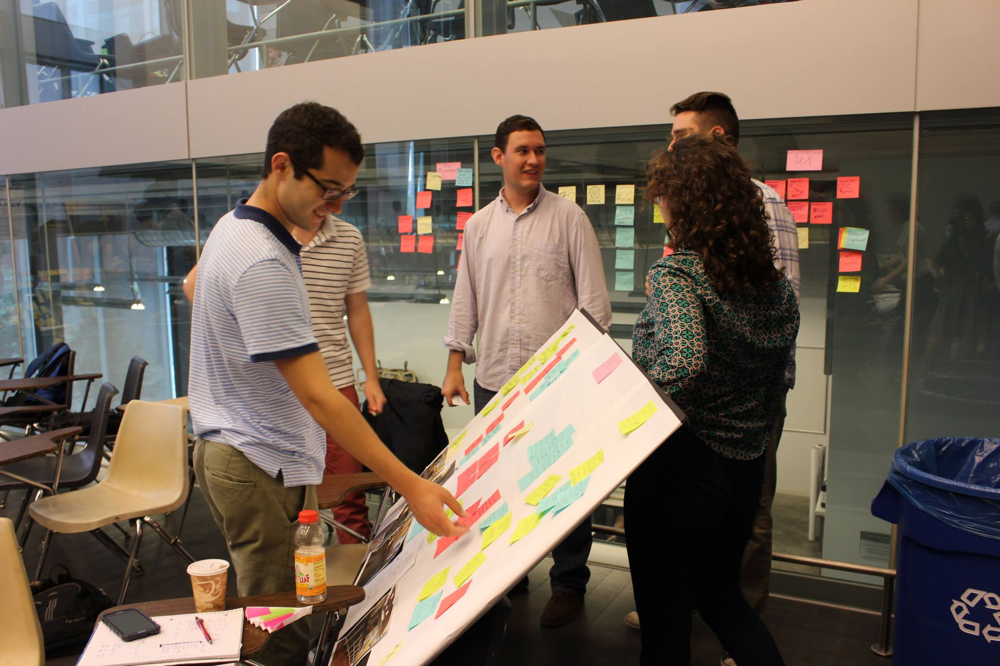
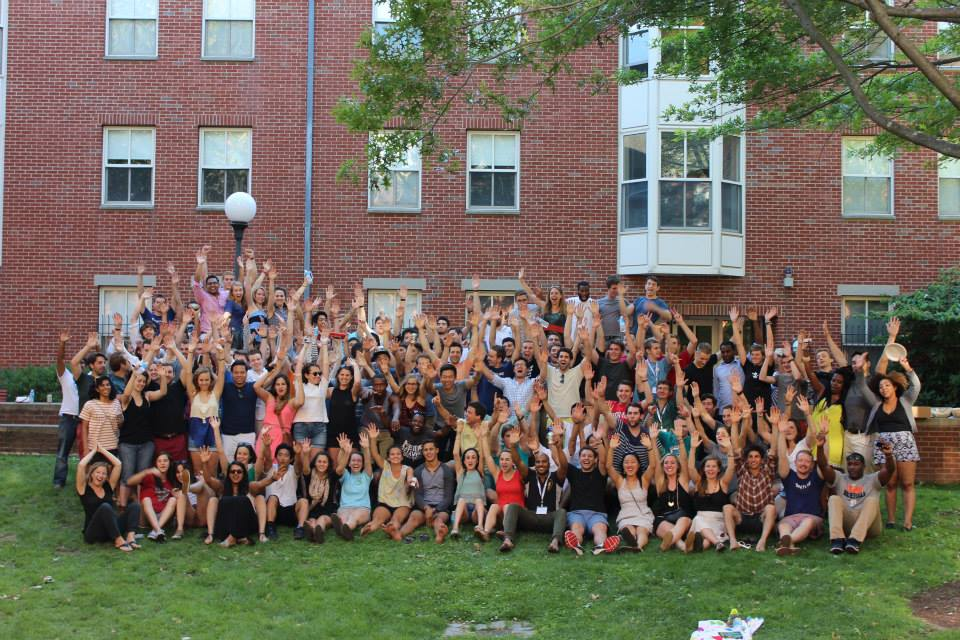

Venture for America is a fellowship program for enterprising recent college graduates to launch their careers as entrepreneurs and revitalize American cities. After five weeks of training, VFA Fellows spend two years in the trenches of a startup in an emerging U.S. city where they learn how to contribute to a high-growth business. Afterwards, VFA provides the mentorship, network, and resources Fellows need to become entrepreneurs.
VFA's goal is to fuel job growth in cities throughout the U.S. while empowering fellows to create value in their communities. The program aims to produce effective and high-character builders who will found and lead quality organizations throughout their careers.
 Through the VFA fellowship, I am working in operations at Print Syndicate in Columbus, Ohio.

Read more about VFA
- Philanthropy Roundtable: A New Way to Serve
- New York Post: A Worthy Mission for Today's Grads
- Columbus Business First: Columbus gets five Venture for America Fellows
- Rev1 Ventures: Columbus Welcomes Venture for America Fellows
- USA Today: Venture for America Launches Young Entrepreneurs
- New York Times: No Six Figure Pay, but Making a Difference
- All VFA Press